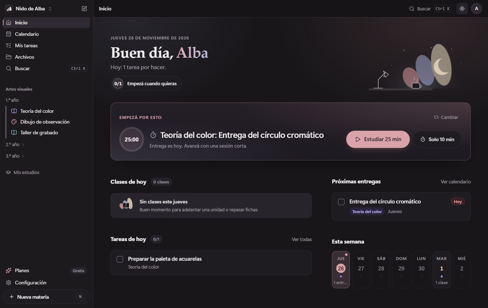

Teoría del color3 unidades · 2 estudiadas
Cursando
Para estudiantes · gratis en la web
Tus materias, tus apuntes y la fecha del próximo parcial, en un solo lugar. Abrí Nido y ya sabés por dónde seguir.
Sin instalar nada · funciona en compu y celular · tus datos sincronizados

Recorrido
Capturas reales de Nido con una cursada de ejemplo. Cambiá de pantalla y mirala en claro o en oscuro.
Inicio · una sugerencia concreta para empezar a estudiar. Datos de ejemplo — ninguna materia real de ninguna persona.
01 Materias y unidades
Ordená la carrera por años, dividí cada materia en unidades y marcá cuáles ya estudiaste. Los cursos sueltos conviven con la facultad, sin mezclarse.
02 Calendario, tareas y entregas
La fecha de una entrega o de un parcial aparece sola en el calendario semanal, en las próximas entregas y en el recordatorio del día. Y si usás otro calendario, exportás la semana en un archivo .ics.
03 Sesiones, fichas y planes
Sesión de estudio
Elegí 10, 25 o 50 minutos. Nido guarda cuánto estudiaste y de qué materia.
Ficha de repaso
Las fichas vuelven a aparecer según cómo te fue. Probá dar vuelta la de ejemplo.
Plan hacia el parcial
Faltan 12 días
Cargás la fecha del parcial y Nido arma el plan hacia atrás.
04 Apuntes, archivos y búsqueda
Escribí apuntes con títulos, listas, tablas e imágenes. Guardá los PDFs de la cátedra y los links al campus. Después encontrá cualquier cosa desde el buscador.
De día y de noche
Nido sigue el tema de tu sistema o lo elegís vos. El mismo Inicio, cuando arrancás a la mañana y cuando estudiás de madrugada.


Dónde usarlo
Entrás con tu cuenta y tenés todo sincronizado entre la compu y el celular. No hay nada que instalar.
Abrir Nido en la web →La versión de escritorio está en pruebas. Cuando el instalador esté verificado, el link va a aparecer acá — antes no.
Todavía sin descargaGratis para empezar. Cargá las materias de este cuatrimestre y probalo con lo que tenés que estudiar hoy.
Abrir Nido en la web